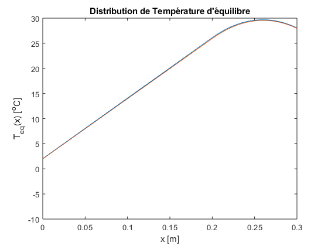
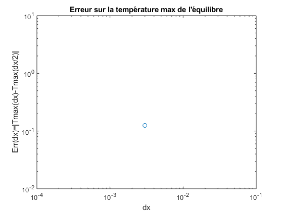
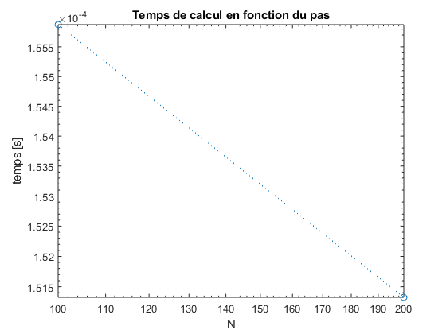

Contents
clear
L=0.3;
k=1;h=10;
ksi = 0.5;
Cv = 1000;
rho = 2000;
dL=0.10;
q=2000;
Ta=-10;
c1=-k; c2=h; c3=-h*Ta;
Ti=20;
d1=-k; d2=-h; d3=h*Ti;
Nar1=[100];
Nar(1:2:2*length(Nar1)-1)=Nar1;
Nar(2:2:2*length(Nar1))=2*Nar1;
ci=0;Tmax=[];figure(1);time=[];
for N=Nar
display(N)
ci=ci+1;
dx=L/N;
if N ==100
dxReal = dx;
end
x=(0:dx:L)';
S=q.*heaviside(x-(L-dL));
if (0)
A=diag(-2*ones(1,N+1),0)+diag(ones(1,N),-1)+diag(ones(1,N),1);
else
i=[(1:N+1) (1:N) (2:N+1)];
j=[(1:N+1) (2:N+1) (1:N)];
s=[-2*ones(1,N+1) ones(1,N) ones(1,N)];
A=sparse(i,j,s,N+1,N+1);
end
A(1,1)=2*c2*dx-3*c1;A(1,2)=4*c1;A(1,3)=-c1;
A(N+1,N+1)=3*d1+2*d2*dx;A(N+1,N)=-4*d1;A(N+1,N-1)=d1;
b=-S/k*dx^2; b(1)=-2*c3*dx; b(N+1)=-2*d3*dx;
if N ==100
AReal = A;
end
tic
u=A\b;
time=[time toc];
plot(x,u); if (ci==1) hold; end
Tmax=[Tmax max(u)];
end
axis([x(1) x(end) Ta 30])
xlabel('x [m]')
ylabel('T_{eq}(x) [^oC]')
title('Distribution de Température d''équilibre')
hold
Err=abs(Tmax(1:2:end)-Tmax(2:2:end));
figure(2)
loglog(L./Nar1,Err,'o')
xlabel('dx')
ylabel('Err(dx)=|Tmax(dx)-Tmax(dx/2)|')
title('Erreur sur la température max de l''équilibre')
figure(3)
loglog(Nar,time,':o')
xlabel('N')
ylabel('temps [s]')
title('Temps de calcul en fonction du pas')
Tmax_eq=Tmax(end-1);
N =
100
Current plot held
N =
200
Current plot released
  
Méthode dépendante du temps
clc
A = AReal;
dx = dxReal;
N =100;
alpha = Cv*rho/k;
dt = 1* (alpha*dx^2);
x=(0:dx:L)';
S=q.*heaviside(x-(L-dL));
b= -S/k; b(1)=-2*c3/dx; b(N+1)=-2*d3/dx;
t_final = 10e5;
type getUp1.m
P = t_final/dt;
M = diag(ones(1,N+1));
M(1,1) = 0;
M(end,end) = 0;
M = sparse(M);
U = ones(N+1);
U(:,1) = Ta*ones(N+1,1);
for i = 1:P
U(:,i+1) = getUp1(U(:,i),b,A,M,ksi,dx,dt,alpha);
end
TmaxTau = max(U(:,1)) + 0.99*(Tmax_eq - max(U(:,1)));
MaxU=max(U);
i=1;
while MaxU(i) <= TmaxTau
i=i+1;
end
Result=i-1;
Tau = Result*dt;
fprintf('La valeur du pas d''espace est %.3e m \n',dx)
fprintf('La valeur du pas de temps est %.3e s \n',dt)
fprintf('La température d''équilibre est %.3e C \n',Tmax_eq)
fprintf('Erreur sur la température d''équilibre est %.3e C \n',Err)
fprintf('La valeur de temps d''équilibrage est %.3e s \n',Tau)
function U = getUp1(Up,b,A,M,ksi,dx,dt,alpha)
U1 = (M - ksi.*dt./(alpha*dx^2).*A);
U2 = (M+ ((1-ksi).*dt./(alpha*dx^2)).*A)*Up ;
U3 = (dt/alpha).*(b) ;
U = U1\(U2-U3);
end
La valeur du pas d'espace est 3.000e-03 m
La valeur du pas de temps est 1.800e+01 s
La température d'équilibre est 2.968e+01 C
Erreur sur la température d'équilibre est 1.252e-01 C
La valeur de temps d'équilibrage est 1.911e+05 s